Appitizers
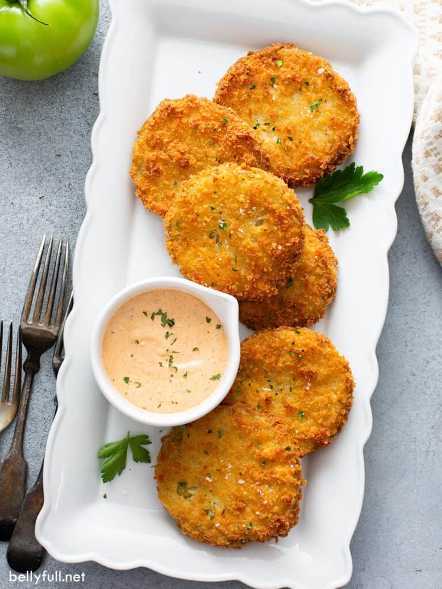
Fried Green Tomatoes
Sliced green tomatoes, coated in a seasoned cornmeal
batter, fried to perfection, and served with a zesty remoulade sauce.

Cajun Shrimp Cocktail
Succulent shrimp seasoned with a spicy Cajun
blend, served with our house-made cocktail sauce.

Hush Puppies
Golden, crispy cornmeal fritters, served with a drizzle
of honey for that perfect sweet and savory combination.
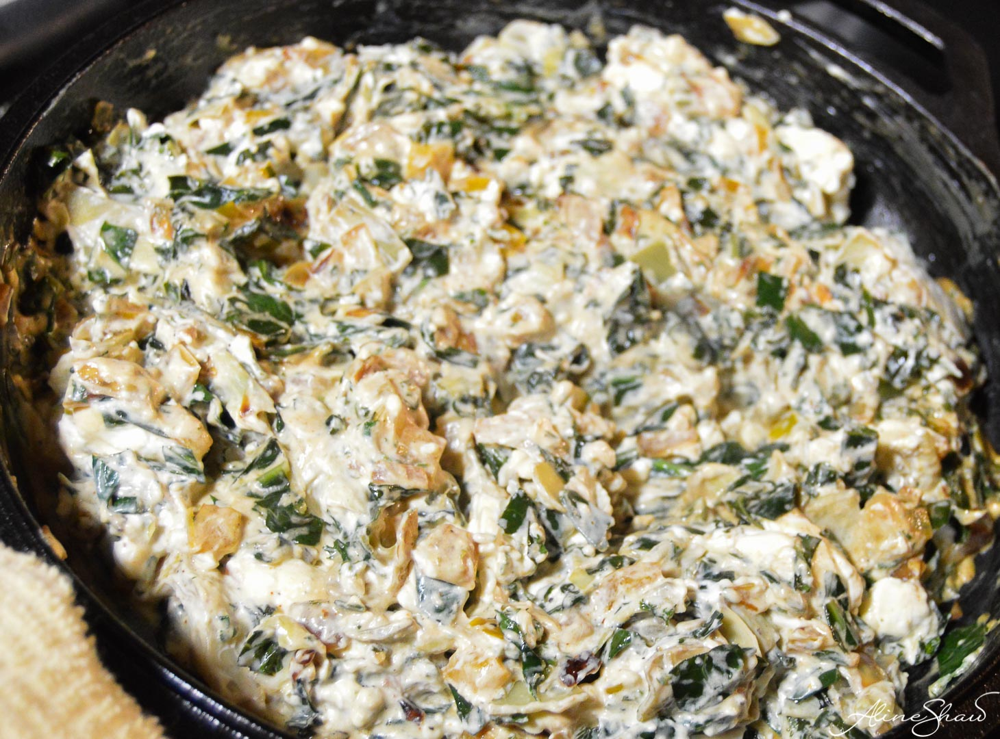
Collard Greens Dip
Creamy dip made with tender collard greens, cheese,
and a hint of smoky bacon, served with cornbread squares for dipping.
Entrees

Southern Fried Chicken
Crispy, golden-brown fried chicken served with a
choice of two sides and a fluffy buttermilk biscuit.
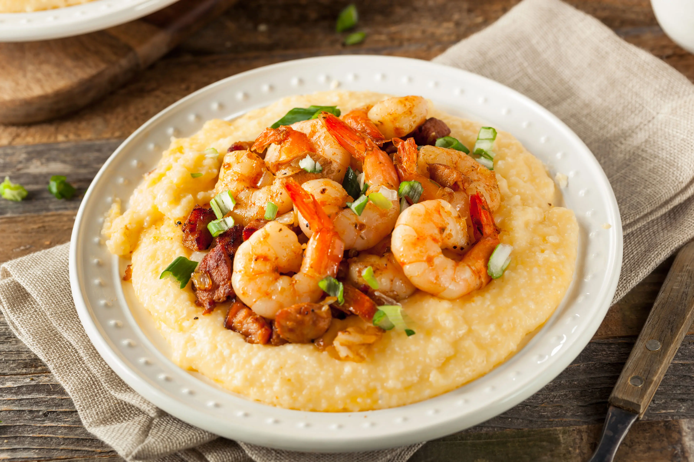
Shrimp and Grits
Creamy stone-ground grits topped with sautéed shrimp,
smokey Andouille sausage, and a rich, flavorful Creole sauce.

Soulful Sampler
Can't decide? Try a bit of everything with our sampler
platter featuring fried chicken, catfish, collard greens, macaroni and
cheese, and cornbread.
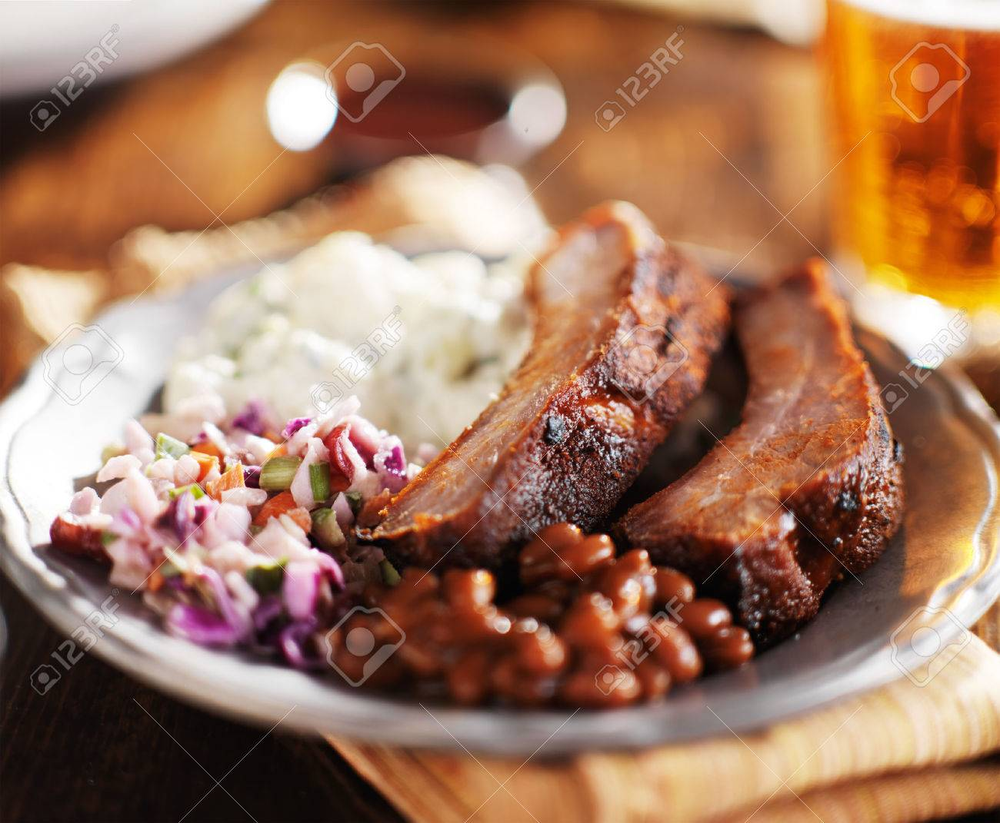
Barbecue Platter
Slow-smoked ribs or pulled pork, slathered in our
house-made barbecue sauce and served with coleslaw and baked beans.

Vegetarian Jambalaya
A hearty and spicy medley of rice, bell peppers,
onions, and okra, simmered in a Creole tomato sauce.
Sides
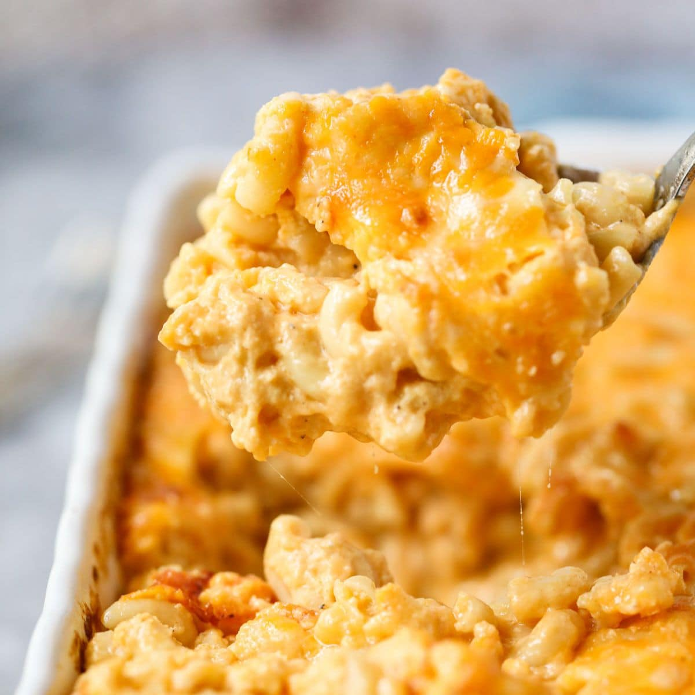
Macaroni and Cheese
Creamy, cheesy, and baked to perfection,
it's the ultimate comfort food.

Collard Greens
Slow-cooked with a secret blend of spices for
that classic Southern flavor.
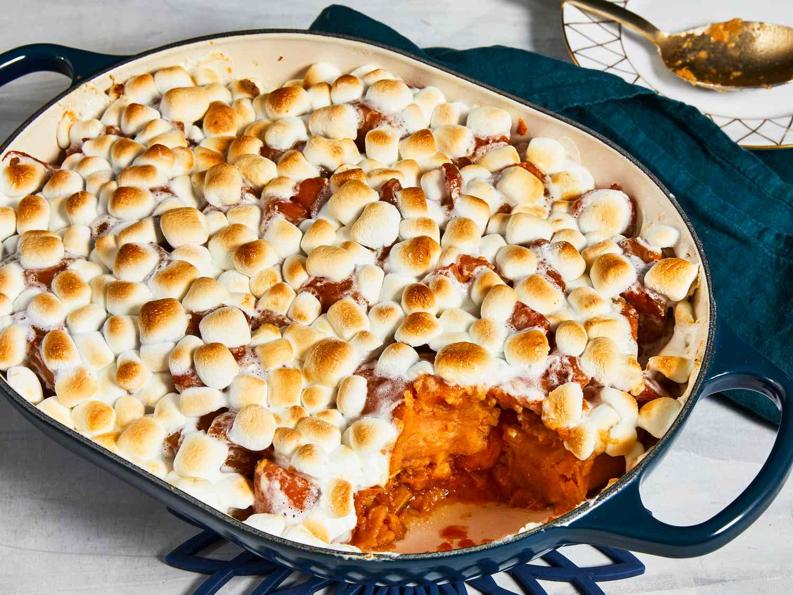
Candied Yams
Sweet potatoes baked with brown sugar, cinnamon,
and a touch of marshmallow fluff.

Fried Okra
Crispy, seasoned okra pods, perfect for dipping.
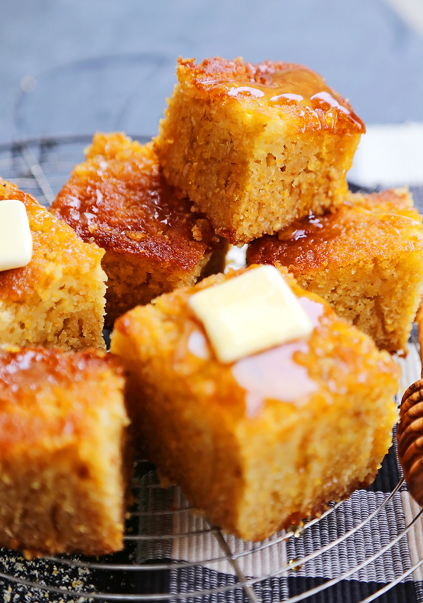
Cornbread
Sweet and savory cornbread squares, served with honey
butter.
Desserts
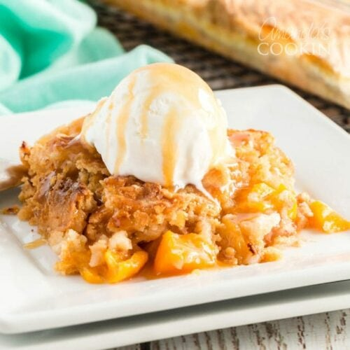
Peach Cobbler
Fresh peaches baked with a buttery crust and a hint
of cinnamon, topped with a scoop of vanilla ice cream.

Sweet Potato Pie
A Southern classic, rich and creamy sweet potato
filling in a flaky pie crust.
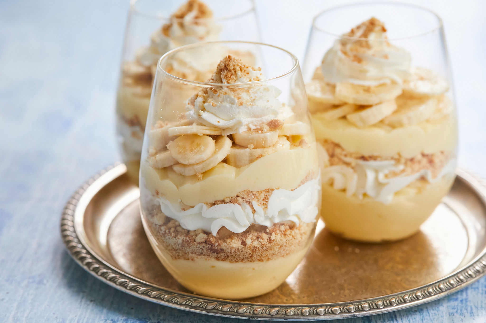
Banana Pudding
Layers of creamy vanilla pudding, ripe bananas,
and vanilla wafers, topped with whipped cream.
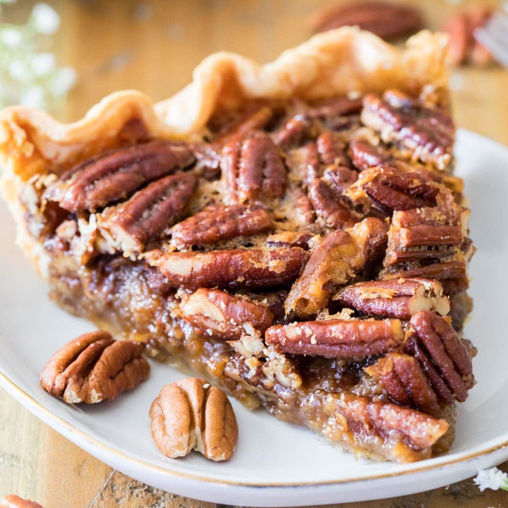
Pecan Pie
A slice of Southern heaven with a gooey pecan filling
and a buttery crust.
Beverages
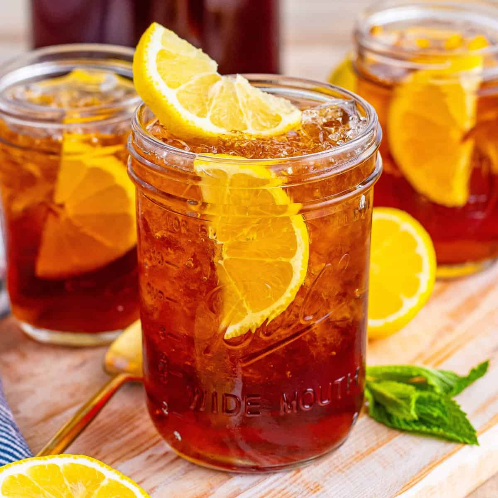
Sweet Tea
The South's favorite thirst quencher, brewed to perfection
and served over ice.

Lemonade
Freshly squeezed and sweetened just right.

Southern Mint Julep
A refreshing blend of bourbon, fresh mint,
sugar, and crushed ice.

Peach Iced Tea
Sweet tea infused with the flavor of
ripe Georgia peaches.